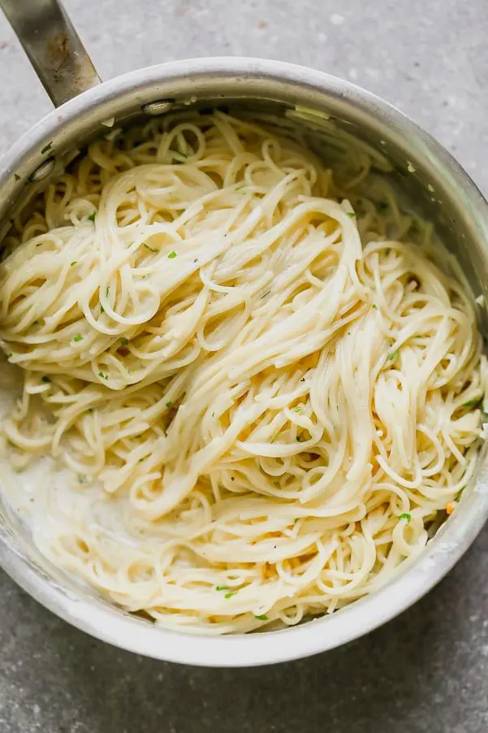

Alfredo Sauce

Description:
This delectable dish is full of butter, cheese, and garlic... what's not to love? Deceptively simple and dangerously artery clogging, this heart attack on a plate is sure to satisfy.
Ingredients
- 1 Box of Angel Hair Pasta
- 1 Stick Unsalted Butter
- 5-20 Cloves of Garlic (Depending on Taste)
- 8 Oz Cream Cheese
- 5 Oz Grated Parmesean Cheese
- 1 Pint Half and Half
- 1/8 Cup Milk
Back to Home